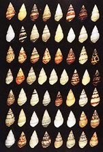
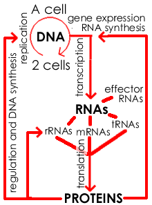

Life, growth & death |
One of the defining features of living things is their ability to grow and reproduce. As they grow, organisms modify their environment. At the same time, changes accumulate in their genetic material (the DNA). These changes, known as mutations, can lead to new forms of genes (alleles), which in turn can alter the shape or behavior (the phenotype) of the organisms that carry them. Because of the random nature
of mutations, distinct sets of genetic changes accumulate in different
lineages. |
These genetic changes leads to inheritable variation between organisms. variations
in the shell colors in the snail Laguus fasciatus In any particular environment, an organism's reproductive success is often strongly influenced by its phenotype, which in turn is influenced by the specific alleles it contains. It is the differentiation reproduction of organisms within a population that leads to adaptation and evolution over time. |
 |
Why should probably call this the "law of evolution" (link), since there is no way to avoid this type of change in a population over time. The factors that influence evolution are complex. Organisms must obtain the resources they needs to maintain themselves and to reproduce. They can cooperate or complete with other organisms of the same type, and with other types of organisms, that include predators, prey and pathogens. |
| in this lab, our goal will be to characterize the growth dynamics of a simple organism, the bacteria E. coli. |
|
|
|
Studying the growth of organisms : Defining the conditions that support growth is a critical first step in the study of an organism. Some organisms are extremely selective in the conditions under which they will grow -- they occupy a very selective niche. Other organisms are less finicky; they can grow under a wide range of conditions. Some organisms can be grown in isolation. Others grow only in communities with other organisms, or in very specialized and difficult to reproduce environments. |
In any scientific study, the choice of organism is critical – which organism we study will be determined primarily by the questions we want to answer. If we are interested simply in population dynamics, it is impractical to study an organism that take twenty to thirty years to reach reproductive age and require expensive facilities to maintain. At the same time, we would prefer that the lessons we learn from our studies be as widely applicable as possible. It is for this reason many studies of population growth and dynamics have been carried out using bacteria. |
|
In the current scientific view, all living organisms can be grouped into one of three kingdoms, the Bacteria, the Archea and the Eukarya. Although bacteria, ferns and whales (the last two are both members of the eukarya) are dramatically different, the great surprise to emerge over the last 50 years is that at the cellular and molecular levels, they are remarkably similar. In particular, organisms share a common core machinery that stores and uses information to build and maintain their structure and produce their behaviors - all living organisms appear to be descended from a common ancestor that lived billions of years ago. This has been one of the great vindications of the theory of evolution – in fact, one could make a strong argument that systems that display the traits of living organisms, genetic variation and differential reproductive success, must evolve and diversify. |
|
 |
The Machinery of Life: All living organisms are store their genetic information in double-stranded DNA. Information is stored in in the sequence of nucleotides along the length of a DNA molecule. All organisms use essentially the same scheme to encode this information; it is known as the genetic code. The replication of the DNA forms the basis of cellular and organismic reproduction. To use the information stored in DNA, it is first transcribed into RNA. Many kinds of RNA are made; one type, known as messenger or mRNA, is used to make proteins, through the process of translation. |
Proteins have many functions. They regulate the replication of DNA, its transcription into RNA, catalyze most of enzymatic reactions that occur within the cell, and are responsible for cell shape and movement. This common core molecular machinery, DNA→RNA→Protein, is present with minor modifications in all known organisms. It
is, in itself, a strong indicator that all organisms share a common
ancestor, which appeared to live approximately 3,500,000,000
years ago. |
 |
|
| Why study bacteria? There are many compelling practical and technical reasons to study bacteria. First, and perhaps most importantly, many human, animal and plant diseases are caused by bacteria. By learning about them, we hope to be able to control them. |
|
Advances in hygienic practices, and the discovery and development of antibiotics, drugs that kill or suppress bacterial growth, have been based on studies of pathogenic bacteria and their interactions with their hosts. Naturally occurring antibiotics are synthesized by organisms to suppress the growth of their bacterial neighbors. These antibiotics hey play an important part of the ecological and evolutionary interplay between species. |
| The use of antibiotics has transformed the world. They are a major reason why infant mortality rates (death before the age of one year) have fallen from ~300 per 1000 births at the beginning of the century to less that 7 per 1000 today (in the industrialized world). Yet the future offers challenges. The widespread use of antibiotics has produced a new evolutionary selection pressure. In response, antibiotic resistance has become more prevalent among microbes. |
 |
In turn, scientists are actively looking to develop new generations of antibiotics with which to combat infectious illness. In addition to their
medical importance, bacteria are used in many industrial processes,
for example in the production of yogurt, cheese, sour
cream, sauerkraut,
pickles, enzymes and vitamins. |
|
|
Under the right conditions, some bacteria can divide once every 20 minutes. If there were no other factors involved, a single bacterium could divide 80 times in a day. This would lead to 280 bacterial cells, that is 1,208,925,819,614,629,200,000,000 cells (~1.2 x 1024 cells). The mass of a single, typical bacterial cell has been estimated at 10-12 grams (10-15 kilograms). |
How much is that? 1.2 x 1024 bacteria
x 10-15 kg/bacteria=
1.2 x 109 kgs of bacteria |
|
Use Wikipedia |
revised 19 March 2005 |
 anthrax
anthrax